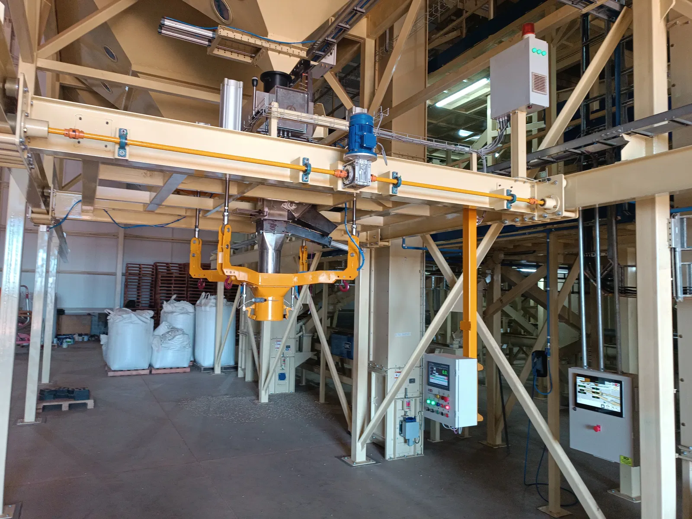
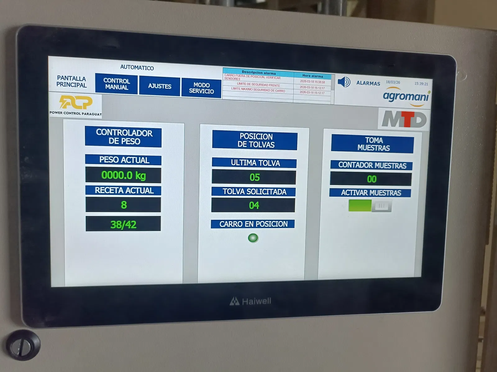
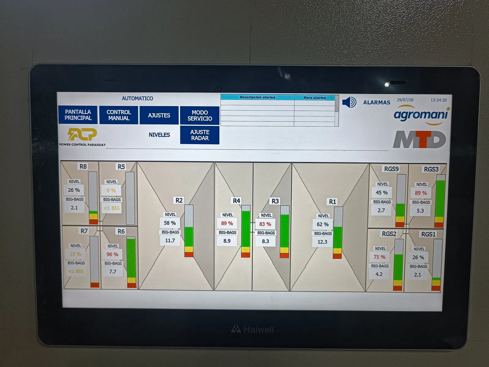
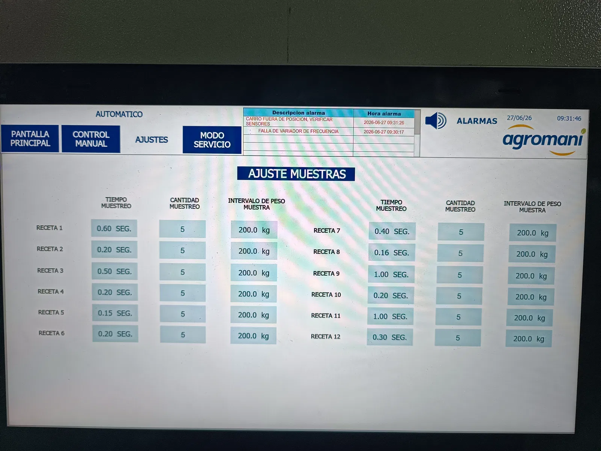

En AgroMani, MTD y Power Control Paraguay desarrollaron en conjunto e instalaron un sistema de embolsado de big bag semiautónomo, autotransportado y montado debajo de 5 tolvas que alimentan distintos calibres de granos de maní. En total se gestionan 12 calibres: varias tolvas concentran hasta 4 productos diferentes, cada uno con su válvula cuchilla.
El objetivo del proyecto fue claro: que el operador configure el equipo una sola vez y, a partir de ahí, opere desde el controlador de peso integrado en la máquina, sin ir y venir al HMI para cada cambio de producto.
El desafío: muchas tolvas, muchos calibres, un solo equipo
Embolsar big bags bajo varias tolvas suele implicar desplazamientos manuales, reubicaciones del equipo y selección local de válvulas. Con 5 puntos de descarga y 12 calibres, ese flujo se vuelve lento, propenso a error y exige que el operador circule constantemente entre máquina y panel.
La planta necesitaba un carro de embolsado capaz de moverse entre tolvas, posicionarse automáticamente y habilitar la válvula cuchilla del calibre elegido, a partir de la receta y el equipo seleccionados en el controlador de peso.
Solución: carro autotransportado con control de peso y HMI
El desarrollo conjunto entre MTD (pesaje e ingeniería del equipo) y PCP (automatización, eléctrica e integración en planta) entregó un carro móvil que combina mecánica, eléctrica y control: se desplaza sobre rieles bajo las tolvas, se detiene en la posición solicitada y deja lista la descarga del producto correspondiente. La lógica de recetas, posición de tolvas y toma de muestras vive en el HMI; la operación diaria se concentra en el controlador de peso montado en la propia máquina.

Cómo opera: receta, desplazamiento y válvula
El flujo operativo queda reducido a una secuencia simple para el operador:
- Selecciona la receta y el equipo desde el controlador de peso
- El carro se mueve solo hasta la tolva correspondiente
- Se posiciona automáticamente y confirma carro en posición
- Se habilita la válvula cuchilla del producto elegido
- Continúa el embolsado de big bag sin volver al HMI
La configuración fina —recetas, muestreo, niveles y servicio— se hace una vez en el HMI. Después, el día a día queda en el controlador de peso integrado, más cerca del puesto de trabajo del operador.

Toma de muestras automática desde el HMI
Además del posicionamiento, el sistema realiza la toma de muestras de forma automática según lo configurado en el HMI: tiempo de muestreo, cantidad e intervalo de peso por receta. Así, el control de calidad queda alineado al calibre en curso, sin interrumpir la lógica semiautónoma del carro.

Resultado para la planta
AgroMani cuenta con un equipo de embolsado big bag desarrollado en conjunto por MTD y PCP, que hace los movimientos de manera automática: desplazamiento entre tolvas, posicionamiento, habilitación de válvula y muestreo según receta. El operador configura una vez y luego controla desde el controlador de peso, sin desplazarse al HMI en cada ciclo.
- Desarrollo conjunto MTD + PCP
- Embolsadora big bag semiautónoma y autotransportada
- Instalada bajo 5 tolvas con hasta 12 calibres de maní
- Posicionamiento automático y válvula cuchilla según receta
- Toma de muestras automática configurable en HMI
- Operación diaria desde el controlador de peso integrado
¿Necesitás una embolsadora big bag, de peso neto o de peso bruto con integración en planta?
Solicitar cotización